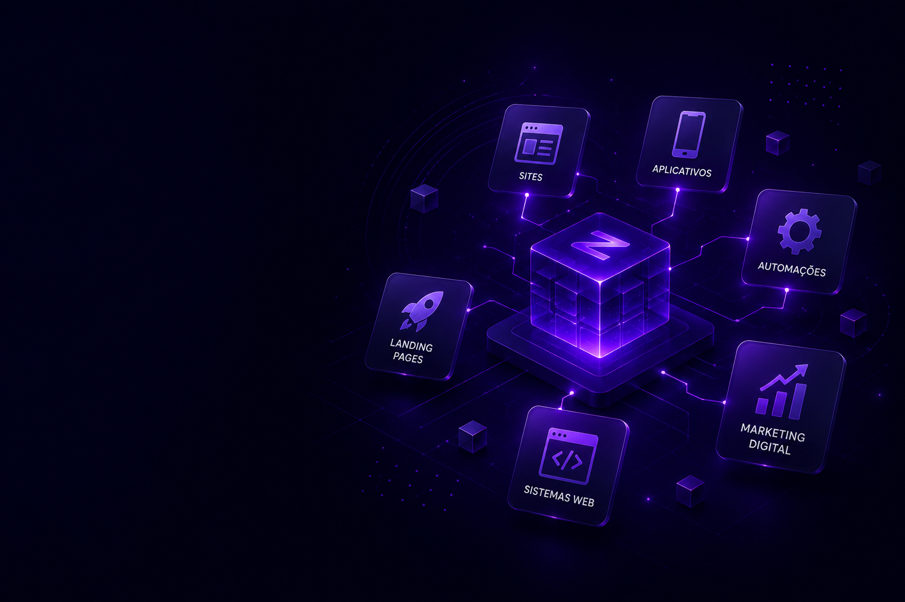

Sites institucionais
Sites rápidos, responsivos e profissionais para transmitir autoridade, apresentar serviços e gerar oportunidades.
Conhecer o site ZYRONDa presença digital à automação da operação, desenvolvemos soluções alinhadas aos objetivos, à rotina e ao momento da sua empresa.
Cada projeto combina estratégia, design, desenvolvimento e uma base técnica preparada para evoluir.
Sites rápidos, responsivos e profissionais para transmitir autoridade, apresentar serviços e gerar oportunidades.
Conhecer o site ZYRONPáginas comerciais focadas em campanhas, lançamentos, captação de contatos e apresentação de ofertas.
Conhecer modelosSoluções personalizadas para organizar informações, controlar processos e centralizar a operação.
Conhecer o ZYRON DeliveryExperiências digitais pensadas para mobilidade, praticidade e conexão com clientes ou equipes.
Ver novidadesConexão entre ferramentas, APIs e rotinas para reduzir tarefas manuais e aumentar a eficiência.
Acompanhar novidadesCom a Mesh Conect, tecnologia e estratégia de divulgação trabalham de forma coordenada para fortalecer marcas.
Conhecer a parceriaEntendemos negócio, público e objetivo.
Definimos escopo, estrutura e direção.
Construímos e validamos a experiência.
Publicamos, acompanhamos e planejamos melhorias.
Conte o que você precisa. A ZYRON ajuda a organizar a ideia e indicar o melhor caminho.
Iniciar uma conversa